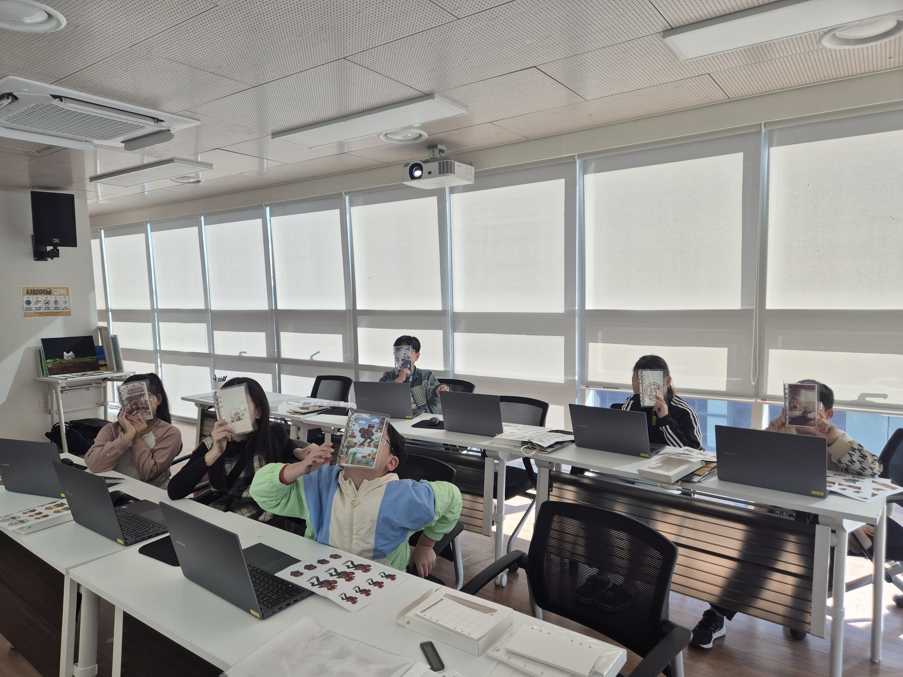
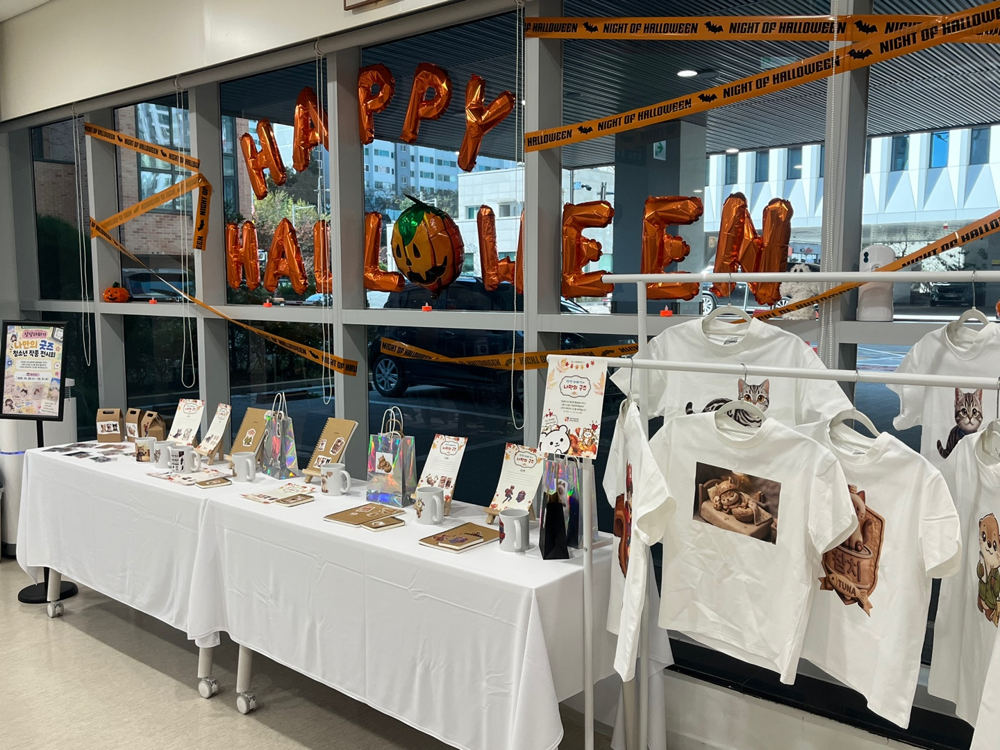
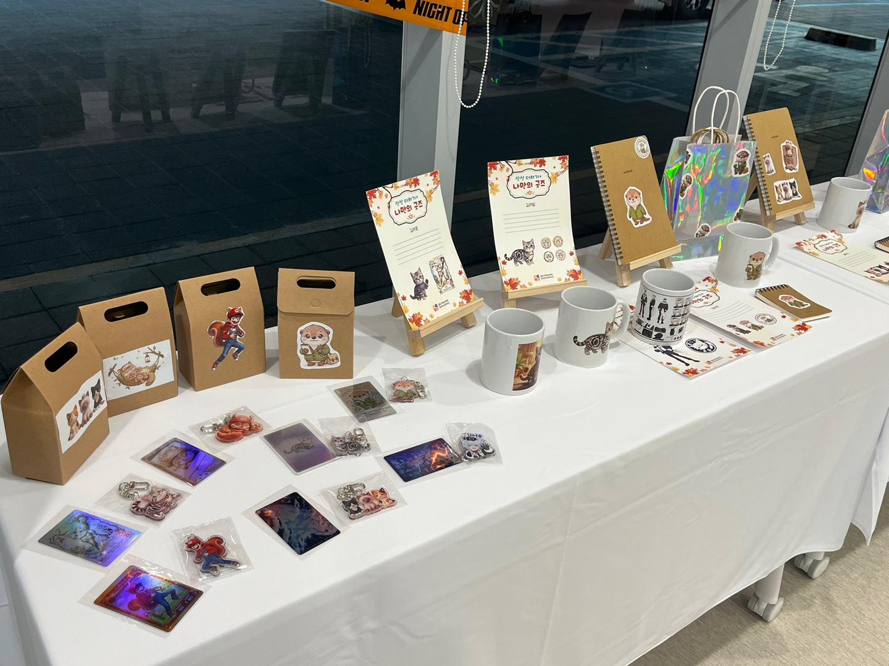
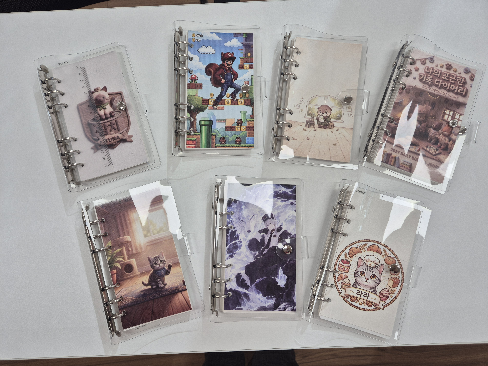
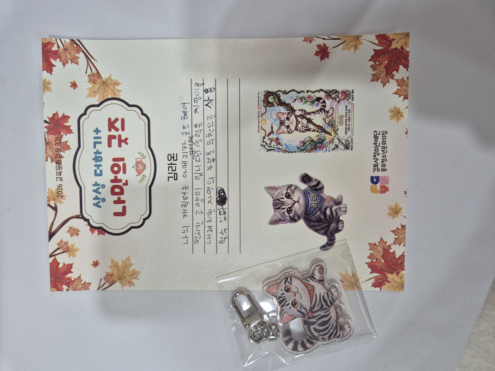
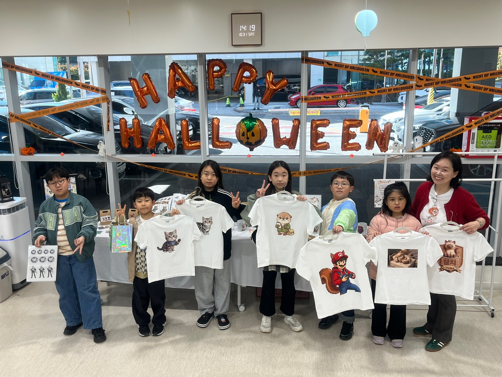

상상 더하기, 나만의 굿즈
"내 안에 숨은 AI 캐릭터를 찾아, 세상에 단 하나뿐인 나만의 굿즈로 완성하다"
🌱 상상을 현실로 만드는 즐거운 여정
생성형 AI라는 낯선 도구가 아이들의 상상력과 만났을 때, 과연 어떤 마법 같은 일이 벌어질까요? 이번 '상상 더하기, 나만의 굿즈' 과정은 참여자들이 스스로의 내면을 들여다보고, AI와의 다정한 대화를 통해 자신만의 오리지널 캐릭터를 발굴하여 세상에 하나뿐인 물리적 굿즈로 탄생시키는 특별한 창작 여정이었습니다.
단순히 화면 속 그림을 보는 것에 그치지 않고, 기획부터 디자인, 그리고 최종 전시와 공유까지 전 과정을 직접 손끝으로 체감해보는 소중한 시간이었습니다.

📚 주요 커리큘럼 및 진행 내용
AI와 친구 되기 & 캐릭터 디자인
생성형 AI 올바른 사용법을 익히고, 나의 성격과 특징을 담은 동물·오리지널 캐릭터 기획
스토리텔링 및 캔바 굿즈 디자인
캐릭터 세계관 구축 및 캔바(Canva)를 활용한 티셔츠, 머그컵, 다이어리 속지 직접 디자인
시스템 다이어리 완성 및 작은 전시회 개최
속표지와 내지를 엮어 나만의 시스템 다이어리를 제본하고, 직접 만든 굿즈들을 모아 오프라인 전시회 개최
✨ 현장 스케치 및 참여자 작품 전시
"선생님, 제가 만든 캐릭터가 진짜 다이어리랑 굿즈로 인쇄되어 나왔어요!"
수업 내내 아이들의 눈빛은 호기심과 설렘으로 반짝였습니다. 직접 기획하고 세상에 하나뿐인 실물 결과물을 품에 안은 아이들의 모습에서 큰 보람을 느낍니다.




溫溫한 강사 소회

6주 동안 서투르지만 진지한 태도로 상상을 현실로 만들어낸 모든 참여자분들께 깊은 감사를 드립니다. 아이들의 손끝에서 탄생한 따뜻한 캐릭터들이 앞으로도 더 넓은 세상에서 멋지게 뛰어놀기를 응원합니다. 따뜻한 공간을 내어주신 풍우청소년문화의집 관계자 여러분께도 고개 숙여 감사드립니다.